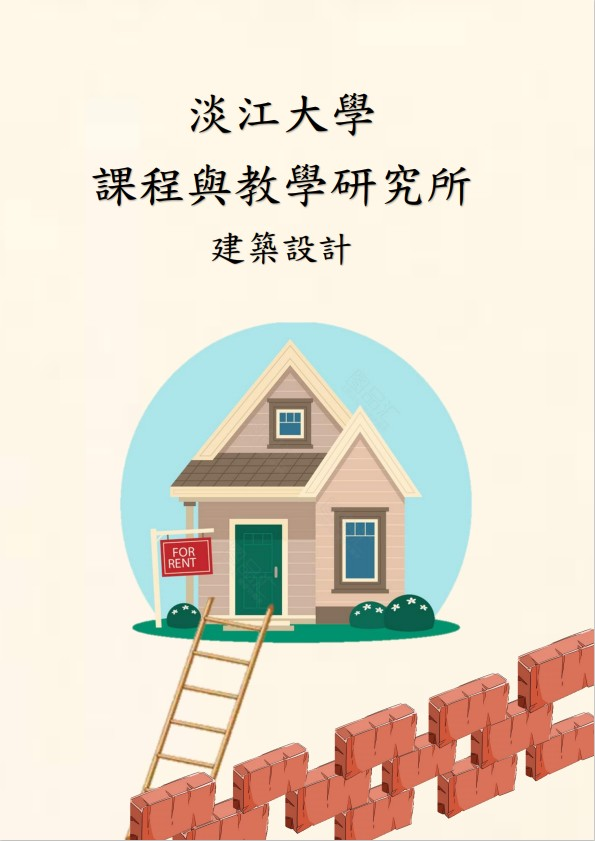
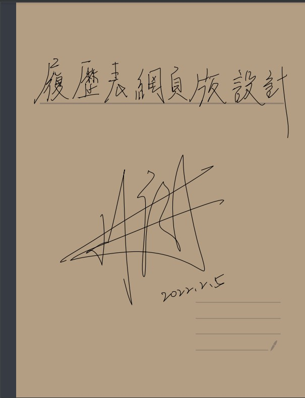

107-1參考資源與服務 製作書籍
介紹:這是上了大學以後第一份團體報告，也是大學以來最大的報告。
報告的內容是人物大事年表，而我們選擇的是五月天。
從蒐集資料，到書面排版、最後封面封底製作以及ISBN都是跟隊友一起製作出來的。
108-2參考資源與服務 資源示意圖

介紹:這是一份關於圖書館專業的一堂課所製作的報告，最主要是告訴使用者哪些資源是關於我們所做的主題。
而我們做的報告主題是黃瑞茂教授指導的課程:建築設計。
這一項報告除了考驗我們學生找尋關於報告主題的資源以外，
還考驗我們在排版、各項資源編排以及資料的篩選。
所以這一份報告的資料來源，很考驗我們對於資料的相關性。
110-1網頁程式設計 RWD網頁

介紹:這一份報告的來源是在大四選擇了一堂通識課的期末報告。
這一堂課除了教一些我已經學過並且學會的html以及css以外，還交了其他的工具，
像是github或是scss這是在以前我都沒有學過的。
而期末報告的時候，老師給了一個範例的網頁，並要求做出一個響應室網頁，所以有了這一份報告的產生。
注:點選標題可以連至web；點選圖片可以連至UX pdf。
履歷表 網頁版

介紹:這是一個受到前輩以及學長啟發所做出來的一個網頁。
注:點選標題可以連至web；點選圖片可以連至UX pdf。